The Concept of Modularity in Industrial Furniture: Unlocking Flexibility, Efficiency, and Ergonomics
Modularity is a concept that has revolutionized many industries, from technology to architecture, and industrial furniture is no exception. But what exactly does "modularity" mean in the context of industrial furniture, and why is it such a game-changer? Let’s break it down.
What Is Modularity?
Modularity is the design principle of creating products from interchangeable components, or "modules." Each module serves a specific function but can be combined with others to create a larger, configured system. In industrial furniture, this means you can design workstations, storage units, and even entire workspaces that are flexible, scalable, and adaptable to changing needs.
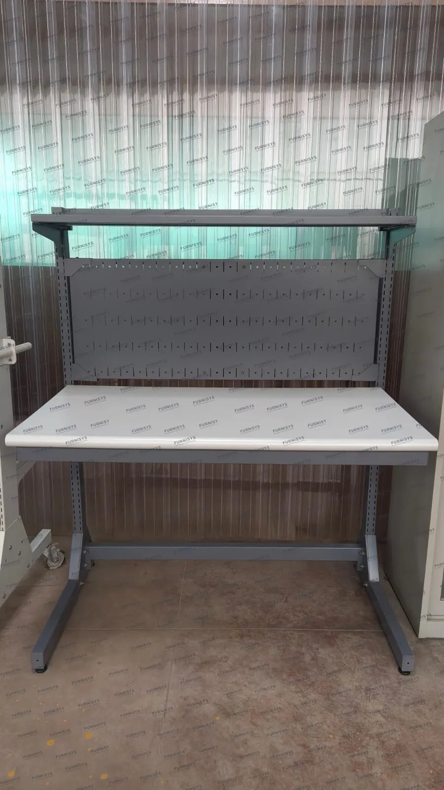
Modular Workstation
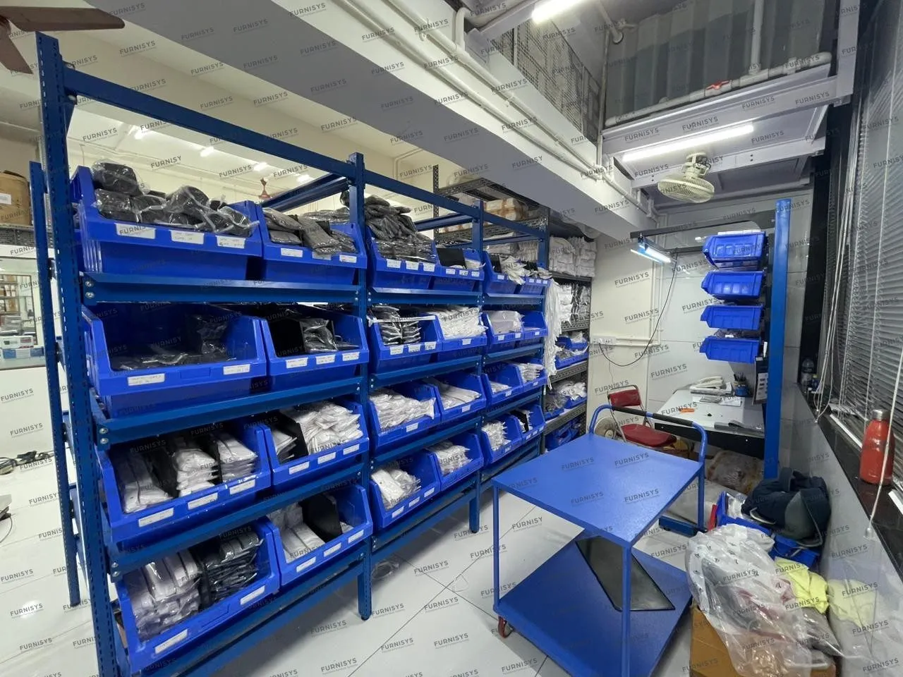
Modular Link Uprighter
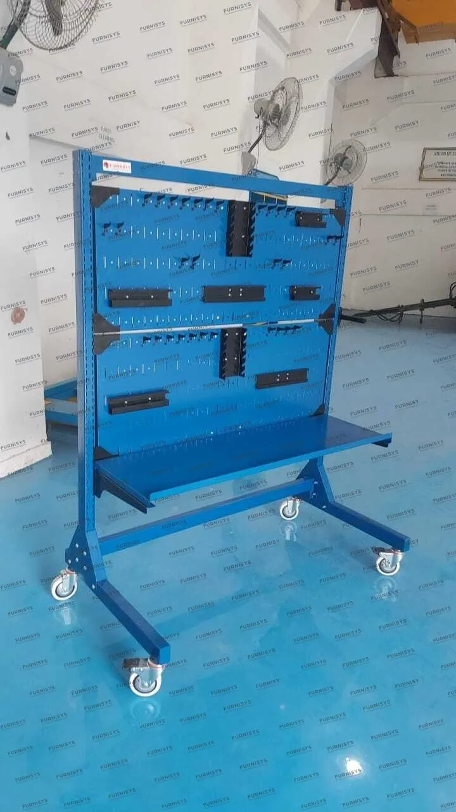
Why Should You Care About Modularity in Industrial Furniture?
Here’s a question: How often do your needs change at work? Whether it’s a change in workflow, a shift in storage requirements, or the need to expand your workspace, having a flexible system that can grow with you is invaluable. That’s where modular furniture comes in.
The Benefits of Modularity in Industrial Furniture
1. Flexibility: Can Your Workspace Adapt to Change?
The Benefits of Modularity in Industrial Furniture
1. Flexibility: Can Your Workspace Adapt to Change? Q: What happens when your business or workspace needs change? Do you need to buy entirely new furniture, or can you adapt what you already have?
A: With modular systems, you can simply swap out or add new components to meet your evolving needs. Whether it's adjusting the height of a workstation, adding more storage, or incorporating new accessories, modular furniture makes these changes easy.
Example: A modular workbench with adjustable shelves, tool rails, and storage options can easily be reconfigured for different tasks—be it assembly, testing, or packaging.
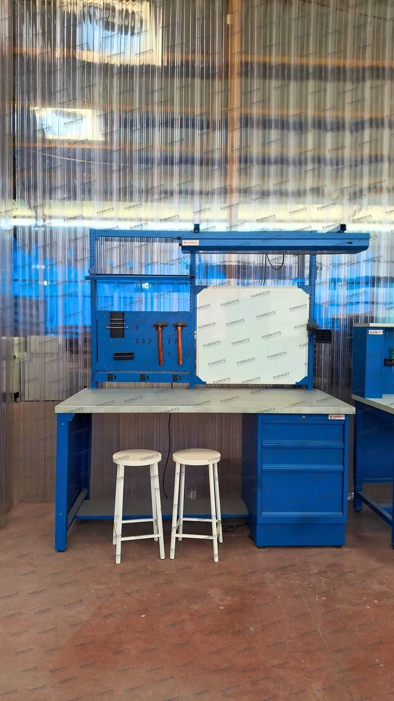
Adjustable Shelves
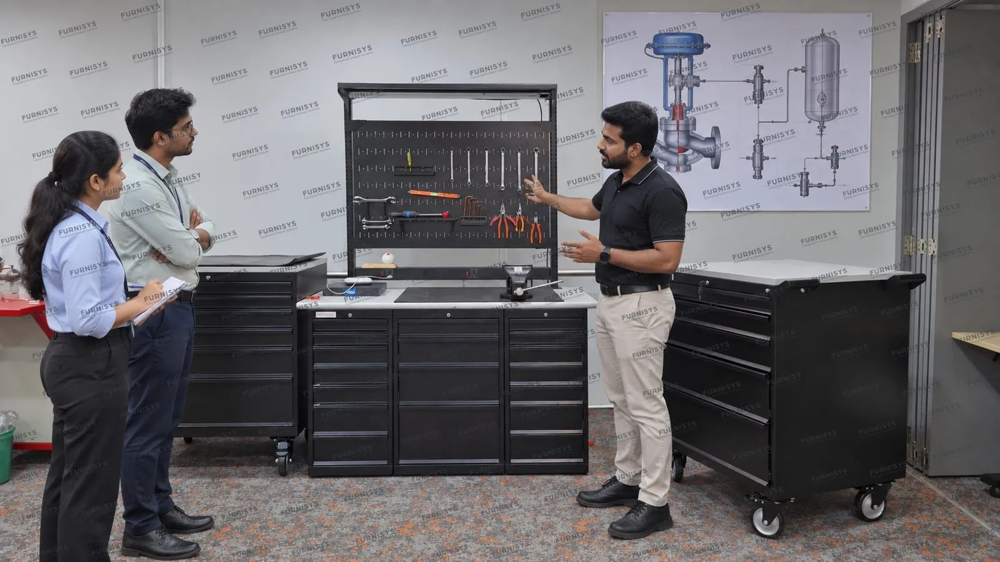
2. Cost-Effectiveness: Is It Worth the Investment?
Q: Is modular furniture more expensive upfront? And if so, is it worth it in the long run?
A: Yes, modular systems can have a higher initial cost, but they save money in the long run.
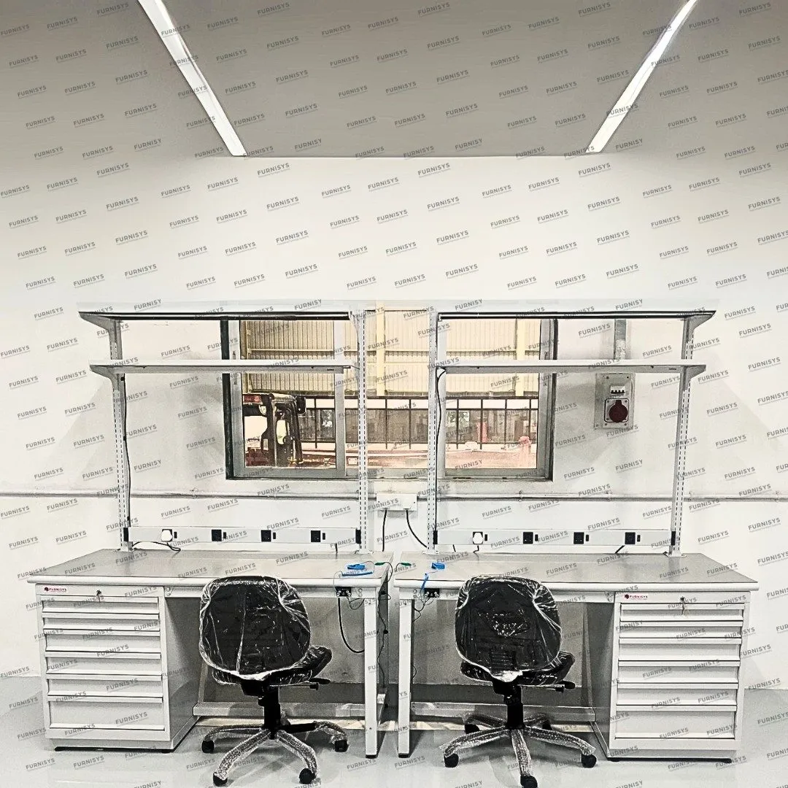
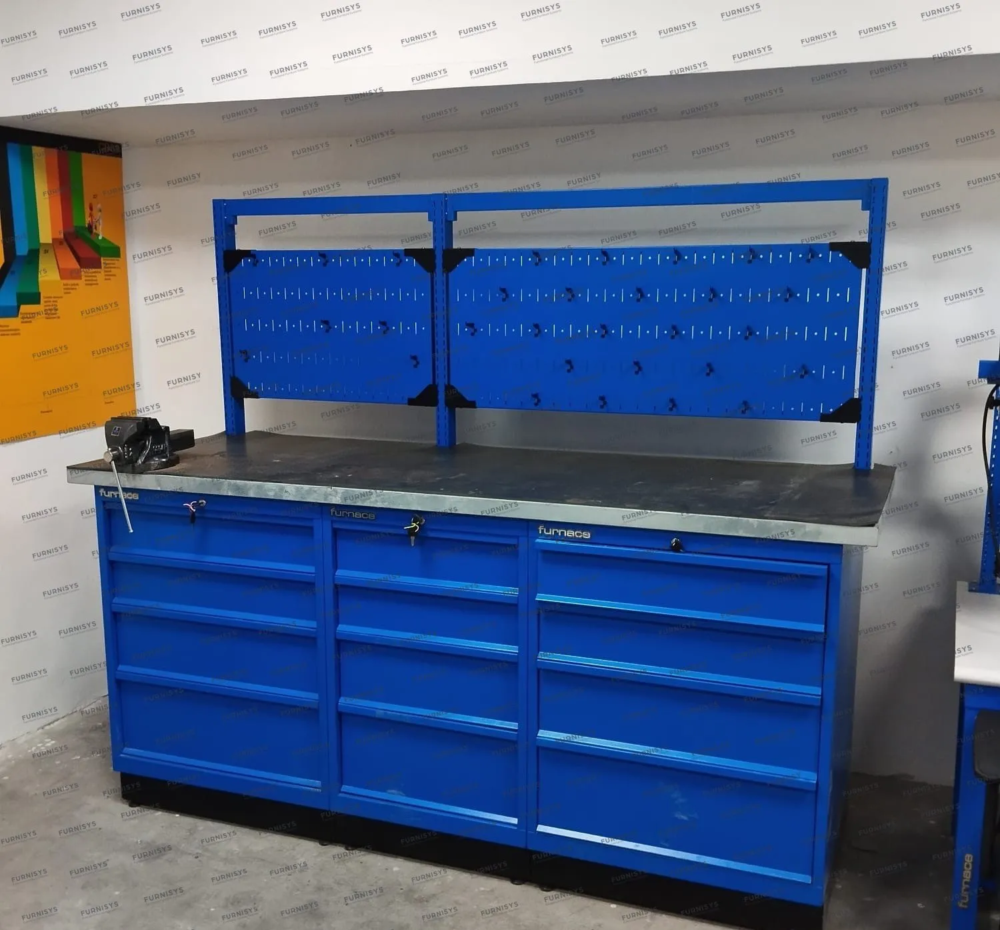
Instead of replacing entire systems when your needs change, you can add or swap out individual components. This means you get to keep your existing setup while making updates as necessary, avoiding costly overhauls.

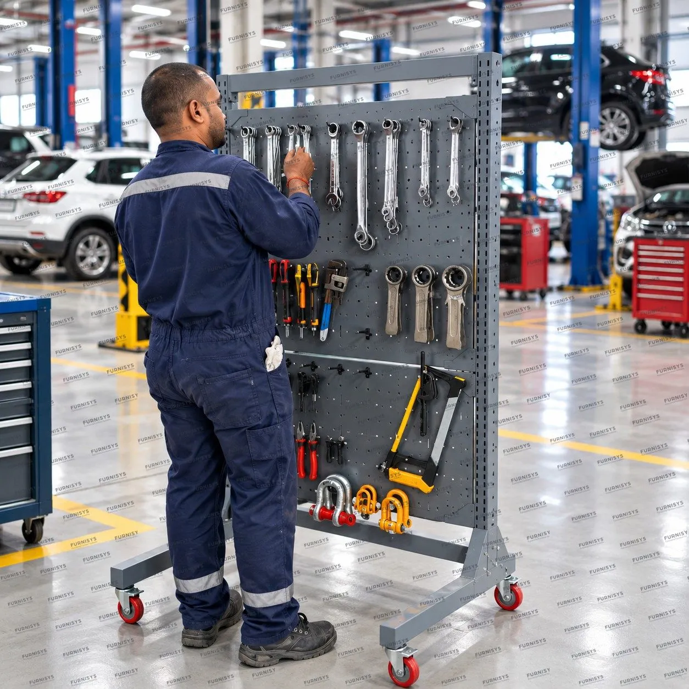
Example: A modular storage rack system can grow with your inventory just add more modules as needed, rather than replacing the entire system.
3. Scalability: Can Your System Grow with You?
Q: What happens if your business grows? Can your workspace keep up?
A: Absolutely! One of the greatest benefits of modular systems is their scalability. As your business expands, you can add new modules to your workstations or storage units. This ensures that your workspace grows with your needs, saving you the hassle of starting from scratch.
Example: If your storage requirements increase, you can simply add additional shelves or cabinets to your existing modular system rather than buying new storage units.
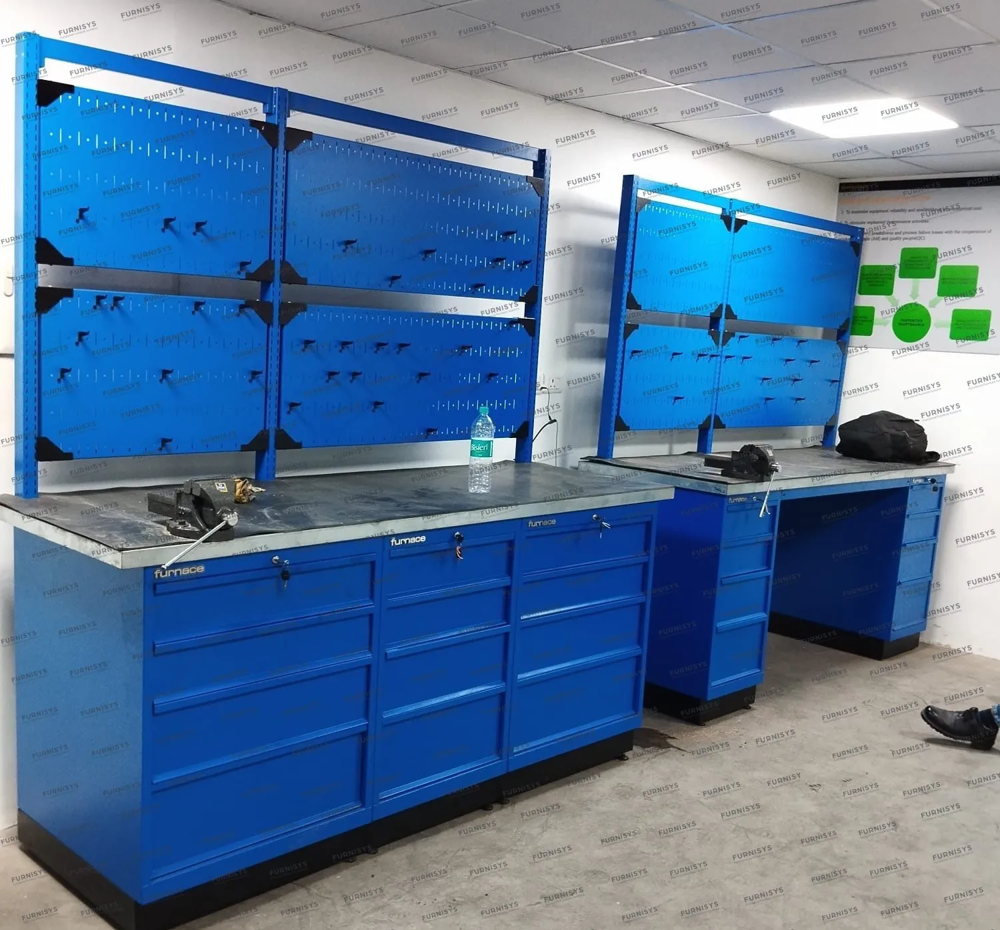
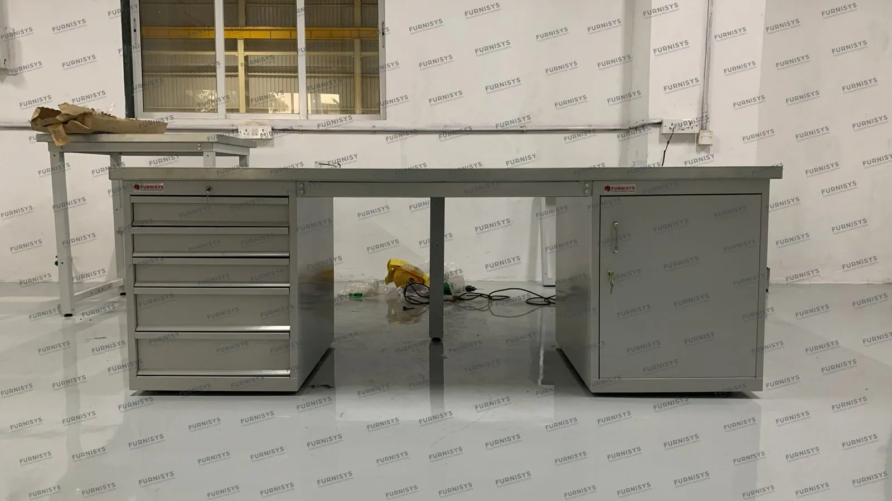
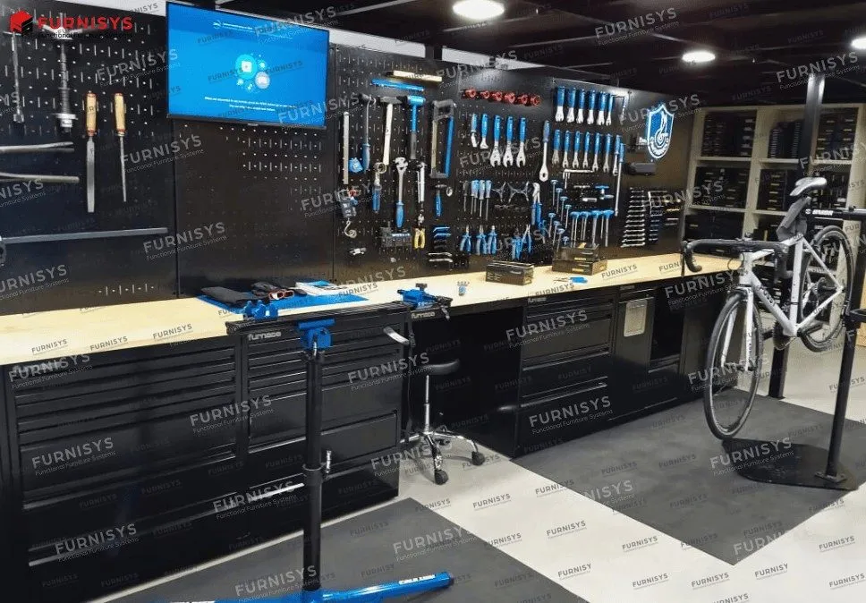
4. Easy Maintenance: What If Something Breaks?
Q: What happens if a part of your modular system breaks or needs to be upgraded?
A: Since each component is independent, you can replace or upgrade individual modules without disrupting the entire system. This makes maintenance quick and efficient, reducing downtime.
Example: If a tool rail on a workbench gets damaged, it can be replaced easily without affecting the entire workstation.
5. Organization and Efficiency: How Does Modularity Improve Productivity?
Q: How does modularity affect productivity in the workplace?
A: A well-organized workspace is key to improving efficiency. Modular furniture helps you organize tools, materials, and equipment in a way that makes them easy to access, reducing time spent searching for items.
Example: Modular workstations with integrated tool storage, pegboards, and adjustable shelving allow employees to keep their tools and materials organized and within reach, streamlining workflows.
6. Ergonomics: Can Modular Furniture Improve Comfort and Well-being?
Q: How does modular furniture contribute to ergonomics in the workplace?
A: Modularity also plays a crucial role in improving workplace ergonomics. With adjustable components such as height-adjustable workbenches, ergonomic seating, and configurable layouts, modular furniture allows you to create a workspace tailored to the physical needs of employees. This helps to reduce strain, discomfort, and the risk of injury, ultimately improving overall productivity and well-being.
A: For instance, workstations with adjustable heights can be set to the optimal working position, whether sitting or standing, reducing the risk of back pain and repetitive strain injuries. Additionally, modular furniture allows for personalized configurations that can accommodate the specific tasks being performed, ensuring employees are working in the most comfortable and efficient posture possible.
Example: A modular workstation can be configured with an adjustable desk height, enabling employees to alternate between sitting and standing positions throughout the day. This helps to prevent discomfort and fatigue, especially for tasks that require long hours of focus.
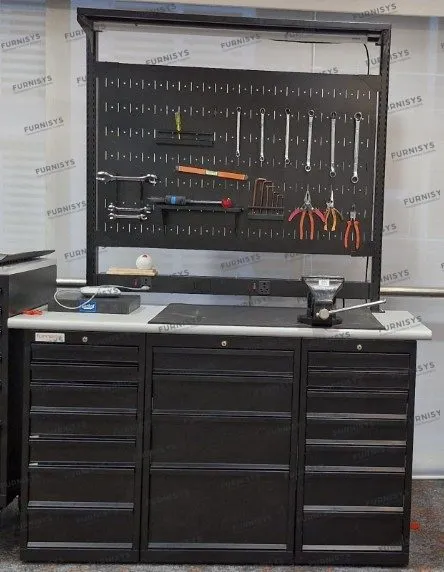
The Drawbacks of Modularity in Industrial Furniture
While modularity offers many benefits, it’s not without its challenges. Let’s look at some potential drawbacks.
1. Initial Setup Costs: Is It Expensive to Start?
Q: Are modular systems expensive to set up?
A: The initial investment in modular systems can be higher than traditional furniture, especially when you’re purchasing multiple components. However, the flexibility and long-term cost savings make it a worthwhile investment.
2. Complexity in Design: Is It Difficult to Choose the Right Modules?
Q: How hard is it to design a modular workspace?
A: Designing a modular workspace requires careful planning to ensure that the components you choose fit your needs. It can be more complex than simply buying a pre-designed workstation, but the flexibility and configurability it offers are well worth the effort.
3. Space Limitations: Can Modular Systems Fit in Small Spaces?
Q: Can modular systems be used in small or cramped spaces?
A: While modular systems are highly flexible, they may not always be the best fit for very small spaces. In some cases, you may need to combine modular furniture with other compact designs to maximize space.
Real-World Applications of Modularity in Industrial Furniture
So, how does modularity work in real-life industrial settings? Let’s look at a few examples:
1. Workstations for Testing and Assembly
In testing and assembly environments, modular workstations are essential. Workbenches can be configured with adjustable heights, integrated tool storage, and specialized accessories to meet the specific needs of the task at hand. As tasks change, the workstations can be easily reconfigured, ensuring maximum efficiency.
2. Storage Solutions for Warehouses
Modular storage systems, such as shelving units and racks, can be scaled to accommodate growing inventory. With adjustable shelving, businesses can expand their storage as needed, keeping everything organized and easily accessible.
3. Configurable Storage for Tools and Equipment
Modular tool storage systems, such as cabinets with adjustable shelves and pegboards, allow businesses to organize tools in a way that maximizes space and accessibility. As the collection of tools grows, additional modules can be added to accommodate new items.
Conclusion: Is Modularity the Future of Industrial Furniture?
The answer is a resounding yes. As businesses grow, diversify, and face ever-evolving challenges, the demand for adaptable, scalable, and efficient solutions becomes increasingly crucial. Modularity provides precisely that—flexibility, cost-effectiveness, and the ability to configure workspaces and storage solutions to meet specific operational needs. From improved space utilization to streamlined workflows, modular furniture stands as a game-changer in modern industrial environments.
“The ability to adapt is the key to success in any business.” Richard Branson
Moreover, modular solutions align with sustainability goals by reducing waste during upgrades or reconfiguration, further adding to their appeal. The durability and reusability of modular furniture ensure that businesses not only save on costs but also contribute positively to environmental management.
By embracing modularity, businesses can craft dynamic workspaces that grow and evolve with them, fostering long-term success and operational efficiency. Whether designing testing labs, manufacturing facilities, or storage areas, modular furniture supports future-focused industries by improving ergonomics, safety, and employee satisfaction.
In a world where adaptability drives innovation, modular furniture equips businesses with the tools to stay competitive, efficient, and prepared for whatever challenges lie ahead. It is not just a trend, it is the foundation for the future of industrial design.